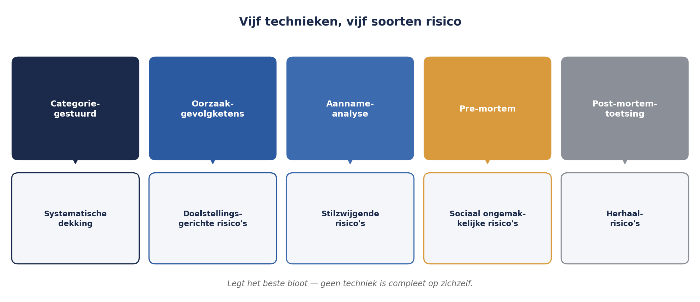

Deel 4 — Identificatie: risico’s systematisch boven tafel krijgen
Niveau 1 — Fundament · Reader
4.0 De eerste sessie
Sanne Bakhuis belegt de eerste identificatiesessie voor de WGP 2.0-herstart met haar context- en criteriadocument in de hand — het document uit deel 3, vastgesteld door de stuurgroep. Aanwezig: de nieuwe projectmanager, twee ontwikkelaars, een vertegenwoordiger van de business, en Gerard Ploeg.
Ze begint zoals de vorige keer: “Wie heeft er risico’s?” Binnen vijf minuten heeft ze acht regels op het bord staan. Zeven daarvan zijn variaties op wat er al in het oude register stond. De sessie loopt vast op stilte.
Dat is niet omdat er geen risico’s meer zijn. Het is omdat “wie heeft er risico’s” de meest onproductieve identificatievraag is die bestaat — hij spreekt alleen aan wat mensen toevallig al paraat hebben, en dat is vrijwel altijd wat er al bekend was. Dit deel gaat over de technieken die wél iets nieuws boven tafel krijgen.
4.1 Waarom vrij brainstormen niet werkt
Vrije brainstorm heeft twee structurele zwaktes. De eerste is dat hij leunt op wat aanwezigen zich toevallig herinneren — recente gebeurtenissen, de meest zichtbare zorgen, de mening van wie het hardst praat. De tweede is dat hij geen enkele garantie geeft dat een categorie van risico’s compleet in beeld komt: als niemand aan juridisch risico denkt, komt juridisch risico niet op het bord, en niemand merkt het gemis.
Dat is precies wat er bij WGP 2.0 gebeurde met de drie risico’s die de post-mortem later blootlegde (zie deel 1): scope-instabiliteit door wetgeving, sleutelkennis bij één persoon, leveranciersafhankelijkheid. Geen daarvan was onbekend — Gerard Ploeg wist zelf donders goed dat hij de enige was die de premieberekening doorgrondde. Ze werden alleen nooit gevraagd, omdat er geen techniek was die daar systematisch naar zocht.

De oplossing is niet enthousiasme of meer tijd. De oplossing is structuur die je dwingt ergens te kijken waar je niet vanzelf zou kijken.
4.2 Vijf technieken, en wanneer je welke gebruikt
Categorie-gestuurde identificatie
Werk een vaste lijst risicocategorieën systematisch af — bijvoorbeeld financieel, juridisch/compliance, technisch/IT, organisatorisch/personeel, extern/leverancier, reputatie — en vraag bij elke categorie apart: welke risico’s zien we hier? Dit is direct de toepassing van het idee uit het Orange Book (deel 2): een vaste indeling voorkomt dat een hele categorie structureel wordt overgeslagen.
Voor WGP 2.0-herstart zou de categorie “organisatorisch/personeel” de vraag hebben opgeroepen die nooit werd gesteld: is er kennis die bij één persoon zit?
Oorzaak-gebeurtenis-gevolgketens
Begin bij een doelstelling uit het context- en criteriadocument (bijvoorbeeld: opleverdatum 1 november) en vraag systematisch: wat zou ervoor kunnen zorgen dat we deze datum niet halen? Werk elk antwoord door tot een risicozin. Deze techniek levert van nature goed geformuleerde risico’s op, omdat hij al bij de doelstelling begint in plaats van andersom.
Aannameanalyse
Loop het projectplan, de businesscase en de context door op woorden als “gaan ervan uit dat”, “verwachten dat”, “zal”, “is stabiel”. Elke aanname die je vindt, draai je om tot een risicozin (zie deel 1, paragraaf 1.2: elke aanname is een onbeheerd risico). Dit is de techniek die scope-instabiliteit door wetgeving had gevonden — die stond immers als aanname op pagina twee van het oorspronkelijke plan.
Vooraf-mislukt / pre-mortem
Vraag de groep zich voor te stellen dat het project over een jaar opnieuw is mislukt, en laat ze in die fictieve toekomst redeneren: wat is er gebeurd? Deze techniek werkt goed omdat hij het sociale ongemak van “risico’s benoemen” omzeilt — je praat over een fictieve mislukking, niet over een beschuldiging aan het heden. Bij Meridiaan, met een organisatiecultuur die terughoudend is met het melden van tegenvallers (zie de interne context uit deel 3), is dit vaak de meest opbrengende techniek.
Leren van vergelijkbare projecten en de post-mortem zelf
De WGP 2.0-post-mortem is zelf een identificatiebron. Elke bevinding daaruit kan worden getoetst: is de onderliggende oorzaak voor de herstart weggenomen, of speelt hij nog steeds? Dit is geen creatieve techniek maar een controletechniek, en hij hoort standaard aan het eind van elke sessie thuis.

Geen enkele techniek is compleet op zichzelf. De praktijk is een sessie die twee of drie technieken combineert, met bewuste tijdvakken per techniek — niet één ongestructureerd uur “brainstormen”.
4.3 De risicozin in de praktijk: van ruwe input naar volwaardig risico
Een identificatiesessie levert ruwe input op, geen kant-en-klare risicozinnen. De vertaalslag is een apart, disciplinegebonden werkje, en het is waar de meeste kwaliteit verloren gaat als het wordt overgeslagen.
Neem een ruwe opmerking uit de pre-mortem-ronde: “Ik zie het al gebeuren dat de business straks niet meedoet met testen.”
Stap 1 — de oorzaak vinden. Waaróm zou de business niet meedoen? Doorvragen levert op: er is geen capaciteit vrijgemaakt, en de vorige keer (WGP 2.0) is dat ook nooit expliciet geregeld.
Stap 2 — de gebeurtenis scherp krijgen. Wat gebeurt er precies als dit zich voordoet? Niet “de business doet niet mee” in het algemeen, maar: acceptatietests worden uitgevoerd door het projectteam zelf, zonder businessvalidatie.
Stap 3 — het gevolg koppelen aan de doelstelling. Welke doelstelling uit het context- en criteriadocument raakt dit? De kwaliteitsdoelstelling: risico op onopgemerkte fouten die pas na livegang aan het licht komen.
Resultaat:
Doordat er voor de acceptatietestfase geen capaciteit van de business is vrijgemaakt en dit niet formeel is vastgelegd in de planning, kan de acceptatietest feitelijk door het projectteam zelf worden uitgevoerd zonder onafhankelijke businessvalidatie, waardoor fouten pas na livegang aan het licht komen in plaats van tijdens de testfase.
Vergelijk dit met de ruwe opmerking waarmee we begonnen. Dezelfde zorg, maar nu met een aanwijsbare oorzaak (geen capaciteit vastgelegd), een scherpe gebeurtenis (wie test er eigenlijk) en een gevolg dat aan een doelstelling hangt (kwaliteit bij livegang). Dit is de vertaalslag die bij elk ruw risico moet plaatsvinden, en die in een sessie apart tijd verdient — probeer dit niet live tijdens het verzamelen te doen, want dat vertraagt de sessie en remt de opbrengst.
4.4 Rollen in een identificatiesessie
Vier rollen, expliciet toegewezen, voorkomen dat de sessie afhankelijk wordt van wie toevallig het hardst praat:
- Facilitator — bewaakt de techniek en de tijd, formuleert zelf geen risico’s inhoudelijk
- Schrijver — legt ruwe input vast, zonder meteen te herformuleren (dat komt later, zie 4.3)
- Domeinexperts — leveren de inhoud, per categorie of onderwerp aangevuld
- Risico-eigenaar in spe — meestal pas ná de sessie toegewezen (zie deel 7), maar het is nuttig tijdens de sessie al te vragen “wie zou dit risico het beste kunnen beheersen?” als extra toets op de kwaliteit van de formulering
Een veelgemaakte fout is dat de projectmanager zowel facilitator als belangrijkste domeinexpert is. Dat werkt averechts: als facilitator moet je juist stiltes laten vallen en doorvragen, en dat is moeilijk te combineren met zelf de meeste inhoudelijke input leveren. Voor de WGP 2.0-herstart koos Sanne er daarom voor zelf te faciliteren en de projectmanager als domeinexpert te laten optreden — een omkering van de gebruikelijke rolverdeling, en een bewuste correctie op wat er de vorige keer misging.
4.5 Wat de sessie voor WGP 2.0-herstart opleverde
Met de vijf technieken gecombineerd — vooral aannameanalyse en pre-mortem — kwamen er negentien risico’s boven tafel, tegenover de zevenenveertig van het oude register. Dat is geen zwaktebod. Het oude register bevatte zevenentwintig categorieën-zonder-inhoud (zie deel 1) die helemaal niet meetelden als risico’s. Negentien volwaardige risicozinnen, elk met een aanwijsbare oorzaak en een gekoppelde doelstelling, zijn bruikbaarder dan zevenenveertig regels waarvan het merendeel niets zegt.
Onder de negentien: de sleutelkennis bij Gerard Ploeg (nu boven tafel via aannameanalyse — “gaan ervan uit dat de huidige documentatie voldoende is”), de testcapaciteit van de business (via pre-mortem), en een nieuw risico dat bij WGP 2.0 helemaal niet bestond: de kennis over waarom het project de vorige keer mislukte, zit voor een deel bij mensen die inmiddels zijn vertrokken.
Samenvatting van deel 4
- Vrije brainstorm levert alleen op wat mensen zich toevallig herinneren, en garandeert geen dekking van hele categorieën risico. Dit is een structureel probleem, geen kwestie van meer tijd of enthousiasme.
- Vijf technieken, te combineren: categorie-gestuurde identificatie, oorzaak-gebeurtenis-gevolgketens vanuit doelstellingen, aannameanalyse, pre-mortem, en toetsing tegen een eerdere post-mortem.
- Ruwe input uit een sessie is geen risicozin. De vertaalslag — oorzaak vinden, gebeurtenis scherp krijgen, gevolg aan een doelstelling koppelen — is apart werk en verdient aparte tijd.
- Vier rollen (facilitator, schrijver, domeinexperts, risico-eigenaar in spe) voorkomen dat de sessie leunt op wie het hardst praat. Facilitator en belangrijkste domeinexpert zijn idealiter niet dezelfde persoon.
- Minder, goed geformuleerde risico’s zijn bruikbaarder dan veel slecht geformuleerde.
Vooruitblik
Deel 5 neemt de negentien risico’s van Sanne’s sessie en behandelt hoe je ze kwalitatief analyseert: kans- en impactschalen in de praktijk toepassen, de risicomatrix — en waarom die matrix, hoe overal gebruikt ook, een aantal ingebouwde valkuilen heeft die je moet kennen om hem verantwoord te gebruiken.